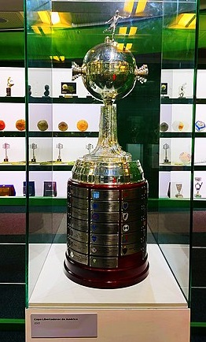

La Copa Conmebol Libertadores o simplemente Copa Libertadores es la competencia de futbol mas importante de America, fue creada en el año 1960 y sigue en vigencia hasta el dia de hoy. Es un torneo anual internacional oficial de fútbol organizado por la Confederación Sudamericana de Fútbol. En 1948, se desarrolló en Chile el Campeonato Sudamericano de Campeones, una novedosa competición internacional sudamericana de clubes, que reunía a los campeones de las ligas sudamericanas. El certamen, que contó con el apoyo del presidente de la CONMEBOL, dicha competencia fue el antecedente de la Copa Campeones de America, llamada así porque en un principio unicamente participaban los campeones de cada país. En 1965 el campeonato comenzó a denominarse Copa Libertadores de América o Copa Libertadores, ya que no solo se clasificaban los campeones sino también los subcampeones de cada país. Desde 1998, se le agregó el nombre del auspiciador oficial, por lo que fue conocida como Copa Toyota Libertadores, durante 9 años hasta 2007. Ese mismo año, incursionaron equipos de México, pese a que este país está afiliado a la Concacaf. En 2008 nuevamente cambia de denominación, al ser patrocinado por el Grupo Santander de España, siendo ahora Copa Santander Libertadores, durante 4 años hasta 2012. En la edicion de 2013, la Copa Libertadores cambió nuevamente de patrocinador, pasándose a llamar Copa Bridgestone Libertadores. A finales de 2016 el campeonato cambió su nombre y pasó a denominarse Copa Conmebol Libertadores y Copa Conmebol Libertadores Bridgestone por motivos de patrocinio comercial. Desde la edición 2017 del torneo se alteró el calendario de la competición para que fuese anual. La primera fase clasificatoria empezó a fines de enero, mientras que la definición del certamen terminó en el mes de noviembre; los clubes mexicanos optaron por retirarse del torneo, debido a que no pudieron ajustarse al nuevo calendario. Desde la edición 2019 y por decisión de CONMEBOL se determinó que las finales continentales se resolverán a partido único y en recintos neutrales determinados por la entidad.
